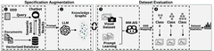
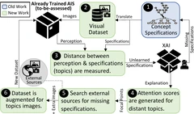
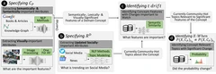
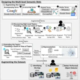
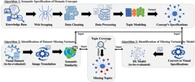
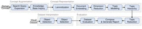
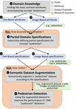

News
- Our paper "Specifying Operational Design Domain in Autonomous Driving for Comprehensive Data Evaluation" has been accepted to RE 2025
- Our paper "An AI-driven Requirements Engineering Framework Tailored for Evaluating AI-Based Software" has been accepted to CAIN 2025
- Our paper "Dynamic domain analysis for predicting concept drift in engineering AI-enabled software" has been published in Journal of Data and Information Science
- Completed Research and Development Internship at General Motors, working on ODD specification frameworks for autonomous driving
- Presented B-AIS framework at ASE 2022 - Automated black-box evaluation system for visual perception in AI-enabled software
- Presented CADE benchmark at RE 2022 - Systematic dataset evaluation framework for AI-enabled software
- Started Research Assistant position at Northern Illinois University under Dr. Mona Rahimi
Publications
Research Highlights
Publications
8
Conferences
5
Journals
3
Publications
2025
-

-

-

2022
-

-

-

-

2019
-
Comparison analysis of electricity theft detection methods for advanced metering infrastructure in smart grid